Icon themes for J2ME client (experimental)
It is possible to create J2ME client with different icon themes. See screenshots below.
Default icon theme
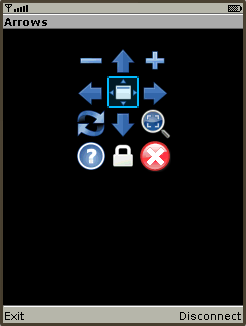 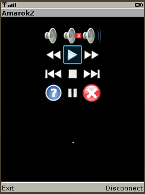Bluecurve icon theme
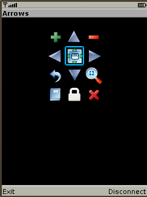 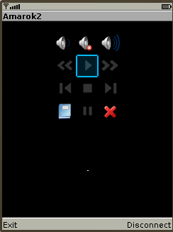CrystalProject icon theme
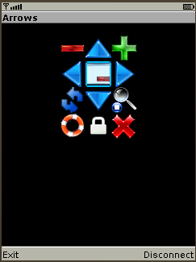 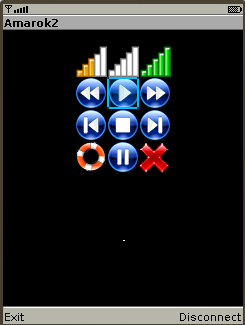CrystalSVG icon theme
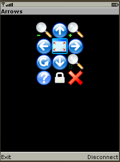 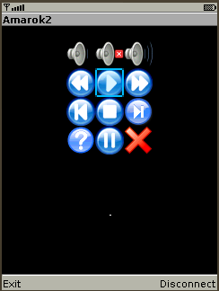Echo icon theme
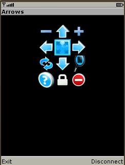 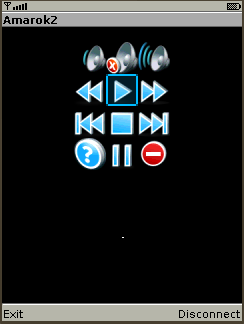Gartoon icon theme
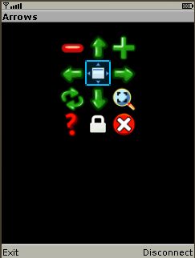 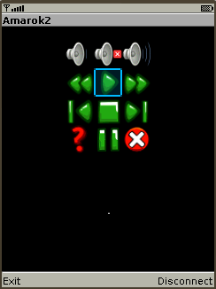Gion icon theme
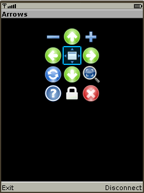Gnome icon theme
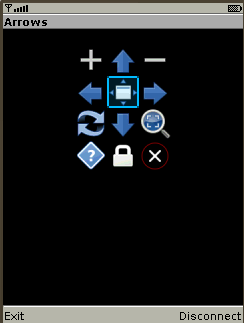 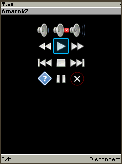Gperfection2 icon theme
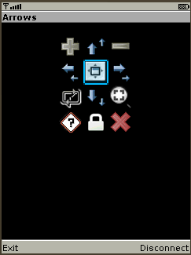 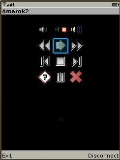Human icon theme
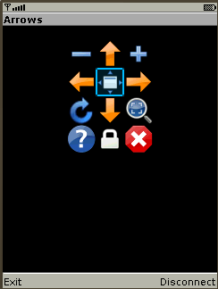 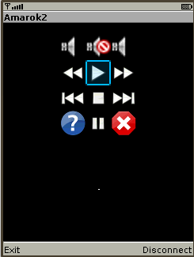Ice icon theme
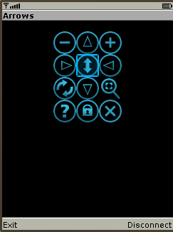 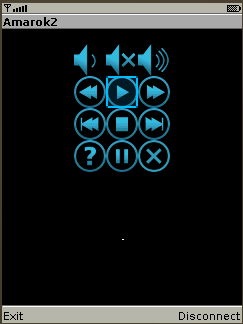Kids icon theme
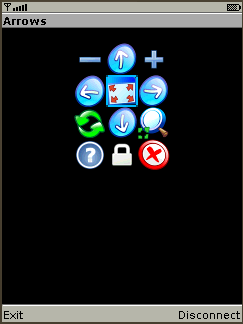 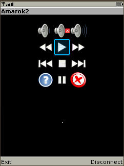Nuvola1 icon theme
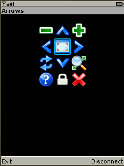 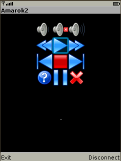Nuvola2 icon theme
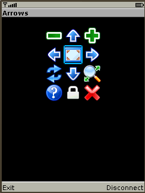Oxygen-blue icon theme
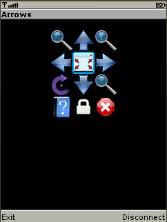 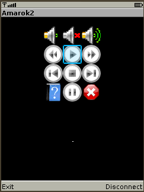Oxygen-green icon theme
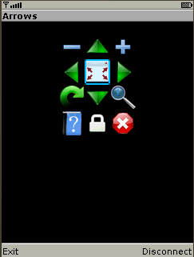Rodent icon theme
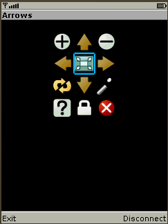 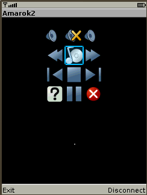Tangerine icon theme
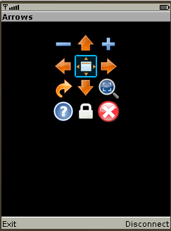Tango icon theme
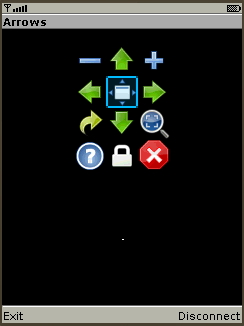 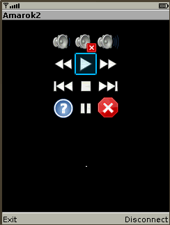How to create J2ME client with different icon themes.
Prerequisites
How-To
Firstly, download package
Run
ls src/icon-themesto see list of available themes. And run
./genClientJar -t "theme name" -j src/anyRemote-XXY.jarto generate J2ME client with specified icon theme. You will find resulting *jar file as src/anyRemote-XXY-theme_name.jar